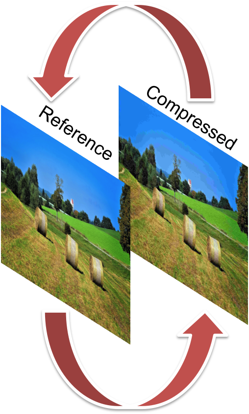
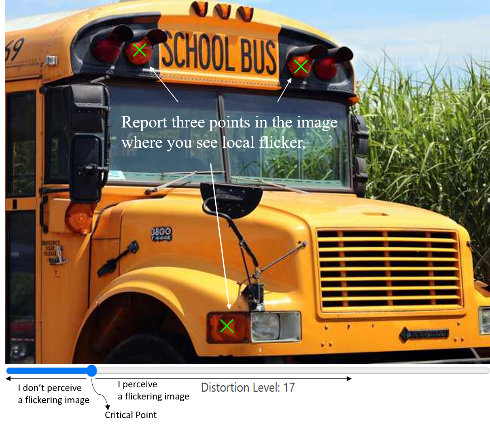

Note: Chrome is recommended for this study. Before accepting the HIT, please make sure your monitor's size is at least 13 inches, and do the calibration until your environment is recognized by the program. Once you passed the calibration, please use the same environment for the study. Otherwise, your submission will be rejected. Thank you for your cooperation.
In this study, you will be presented with a pair of images: a pristine (high quality) reference image and a compressed version of it (the same or lower quality). The images are overlaid and displayed quickly in succession. The display is alternating between the two images 8 times per second, as shown below. You may not notice a difference between the two images from the start.

You are presented with a slider control that allows you to change the quality of the degraded image. The change may not become immediately apparent as soon as you start dragging the slider. However, at some point, you will be able to notice a difference between the two images, which will manifest as a flicker. We are interested in the critical point, which is the earliest slider (left-most) position where you start perceiving the images flicker in just a few regions of the image.
We are looking for very small noise/grain showing at the critical point, rather than the whole image being seen as moving/changing. The smallest flicker looks more like floaters (the things one can sometimes see when looking at a clear sky), or film grain.
Help us to find the critical point of the slider. With the slider to the right of the critical point, you perceive a flickering in the image, while you do not perceive a flickering image when the slider is on the left side of the critical point. With the slider positioned at the critical point, please report three different locations where you perceive that the image is flickering locally.

2. Steps
1) Make sure to review the examples before starting the job. This will greatly help in completing the task successfully.
2) Adjust the slider precisely and find the critical point, then click “I found the critical point!”. Spending around 30 seconds on finding the critical point is recommended.
3) Report three points in the image where you see local flicker.
4) Click “Next Image” and search the critical point for the next image.
5) When you have finished all the images, click “Submit” to submit your HIT result.
3. Keyboard shortcuts
1) ← (left arrow key) moves the slider to the left
2) → (right arrow key) moves the slider to the right
3) (space bar) presses buttons “I found the critical point!”or “Next Image” or “Submit” or “Try Again”
4. Examples
Here is a video to show you how to conduct the study. Please enlarge the video if it is not clear.
- Flickering: In the two images below, slight changes can be seen in the images, such as a subtle variation of the image brightness. These changes can resemble a mild film grain in a static scene of a movie and are often localized to small regions of the image. The (flickering) images below demonstrate the suggested critical point, which is the level of flickering that we are trying to assess in the study.
At this critical level of flickering, you can perceive some regions with slight flickering while in larger regions flicker is not yet visually apparent.
- Severe flickering: In the two images below, flickering is obvious, and it affects the entire image. It is obvious that two images are being toggled back and forth: the pristine and its degraded version. At this level of severe flickering, you have gone too far, the critical point was already surpassed. You can check the slider positions further to the left, decreasing the distortion, until the flicker is just barely visible.
- No flickering: The next two images are static, there is no visible change in the images, however small. At this level of no flickering you have not gone far enough with the slider, the critical point has not yet been reached. Move the slider position further to the right, increasing the distortion, until the flicker is just becoming visible.
Thank you very much for doing your best, we appreciate your help!